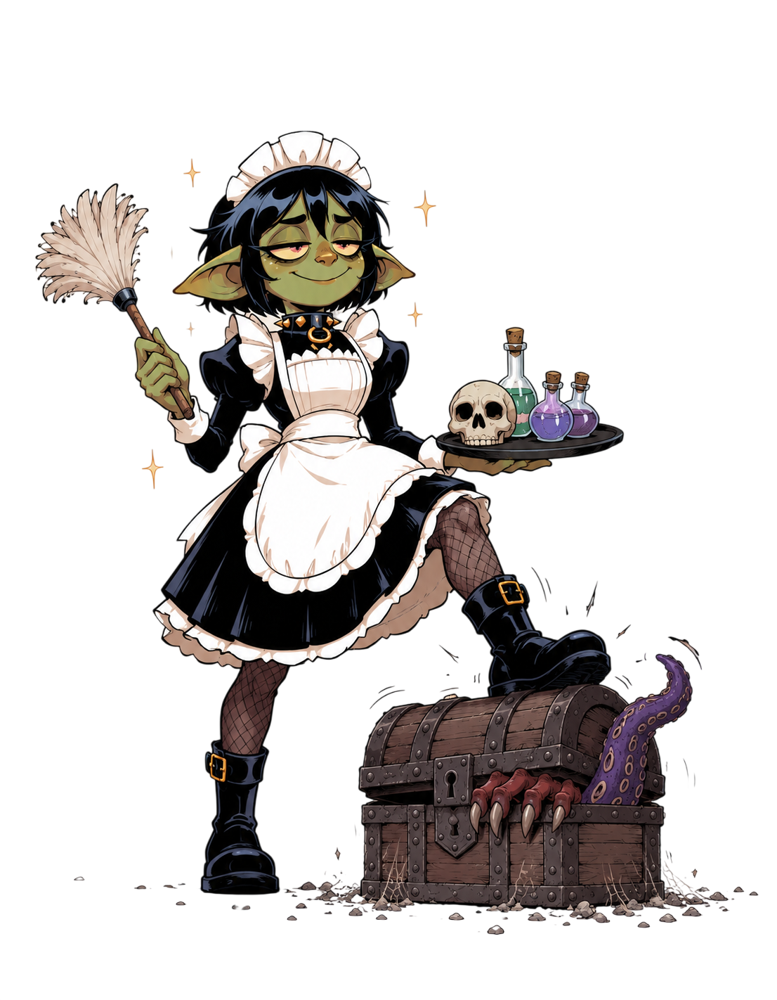
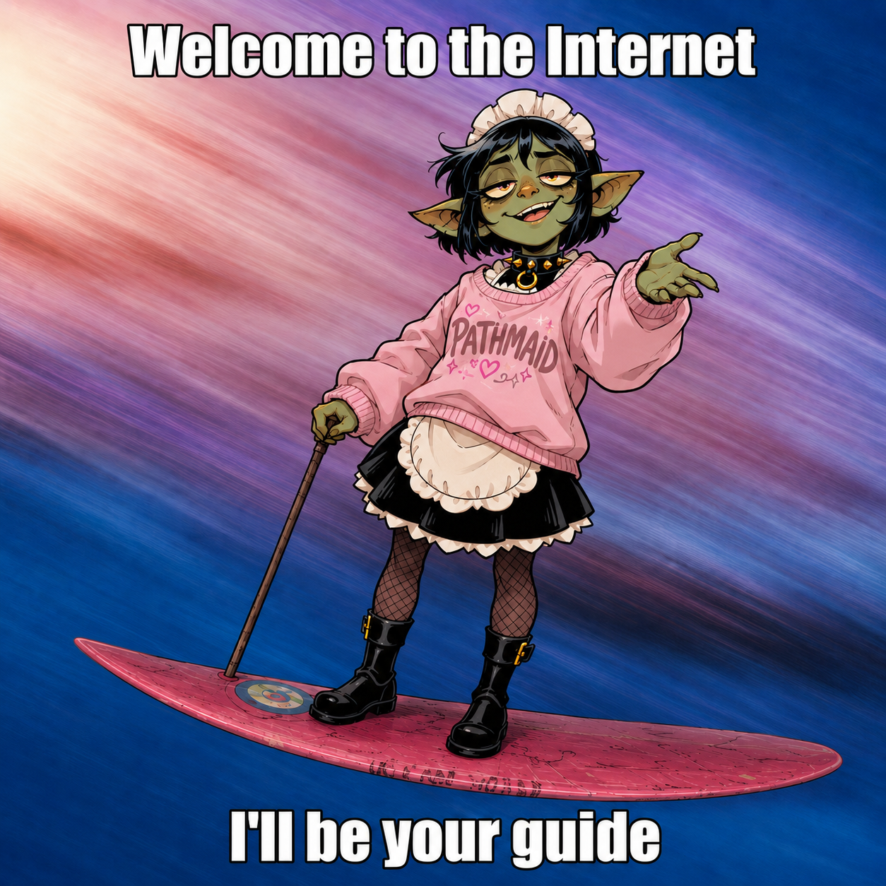
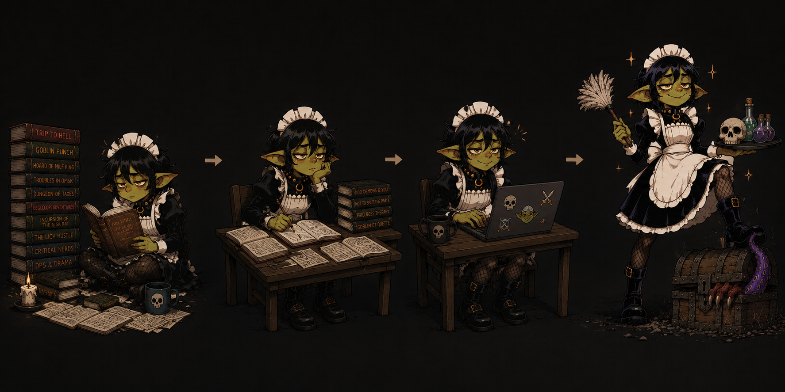

Offline first
Local data stays on your machine and sync catches up when the connection returns.
The all-in-one GM screen: bestiary, combat tracker, custom creatures, knowledge base, and cross-platform tools ready for any table.

Now with cloud sync
Sign in once and keep campaigns, encounters, custom creatures, notes, and uploaded images synchronized across your desktop installs. Prep on one machine, run on another, and keep going when the internet drops.
Local data stays on your machine and sync catches up when the connection returns.
Campaign artwork and handouts travel with the campaign, not just database rows.
Move between Windows, macOS, and Linux without rebuilding the same workspace.

Stop switching between rules pages, sheets, encounter notes, and Foundry exports mid-scene.
Searchable current data means fewer pauses while the table waits for a spell, trait, or condition.
You control every important part of the game. The only remaining task is remembering to enjoy it.
PathMaid turns scattered notes, books, imports, and encounter work into a prepared GM desk. The hardest part is simply starting.

Release shelf
Windows build for your prep desk.
Download for WindowsmacOS build for your prep desk.
Download for macOSLinux build for your prep desk.
Download for Linux